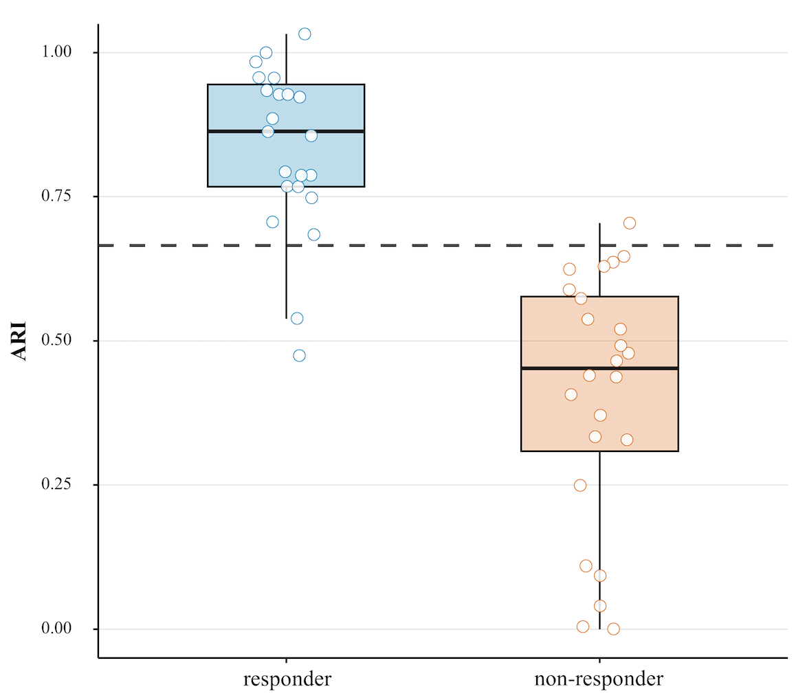

📊 ホルター心電図 PVCトレンド解析
最終update : 2026/6/6
PVCが心房ペーシングで誘発できるかの予測モデル : AOP Response Index : ARI
Holter ECG Arrhythmia Analysis Tool - 画像からデータを自動抽出して解析します
フクダ電子ホルターの不整脈発生表画像をドロップ、クリック、
またはペースト（Ctrl+V）して取り込み
またはペースト（Ctrl+V）して取り込み
PNG, JPG, JPEG形式対応
アップロード画像
画像を読み込んでいます...
データ数
-
データの読み取りと前処理
STEP 1
⚠️ データ編集で表示・編集したデータが全て解析に使用されます。データの追加・削除は「データ編集」ボタンから行えます。
| 時刻 | 総心拍数 [beats] | PVC数 [beats] | 状態 |
|---|
-
元データ行数
-
解析使用数
-
除外データ数
PVC数と心拍数の時系列推移
STEP 2
PVC数
心拍数 [bpm]
散布図と回帰分析
STEP 3
データポイント
回帰直線
Pearson相関分析結果
STEP 4-
相関係数 (r)
-
決定係数 (R²)
-
p値
y = ax + b
-
総心拍数 [beats] の統計
STEP 5-
最小値
-
最大値
-
平均値
-
中央値
-
標準偏差
PVC数の統計
STEP 5-
最小値
-
最大値
-
平均値
-
中央値
-
標準偏差
AOP Response Index : ARI（8時〜18時）
STEP 68:00〜18:00のデータ抽出
| 時刻 | 総心拍数 [beats] | PVC数 [beats] |
|---|
AOP Response Index : ARI = (8-18時のPVC数最小値) / (全データのPVC数平均値)
-
8-18時最小値（分子）
-
最小値の時刻
-
全データ平均（分母）
-
-
判定基準の解説
1. 相関分析 (Pearson r)
- 正の相関: r > 0 かつ p < 0.05
- 負の相関: r < 0 かつ p < 0.05
- 強い相関: |r| ≥ 0.40
- 相関関係なし: p ≥ 0.05
2. AOP Response Index : ARI
AOP Response Index : ARI = (日中最小PVC数) / (全体平均PVC数)
- 極めて高い: Index ≥ 0.80
- 高い: Index ≥ 0.75
- ボーダーライン: 0.50 ≤ Index < 0.75
- 低い: Index < 0.50
